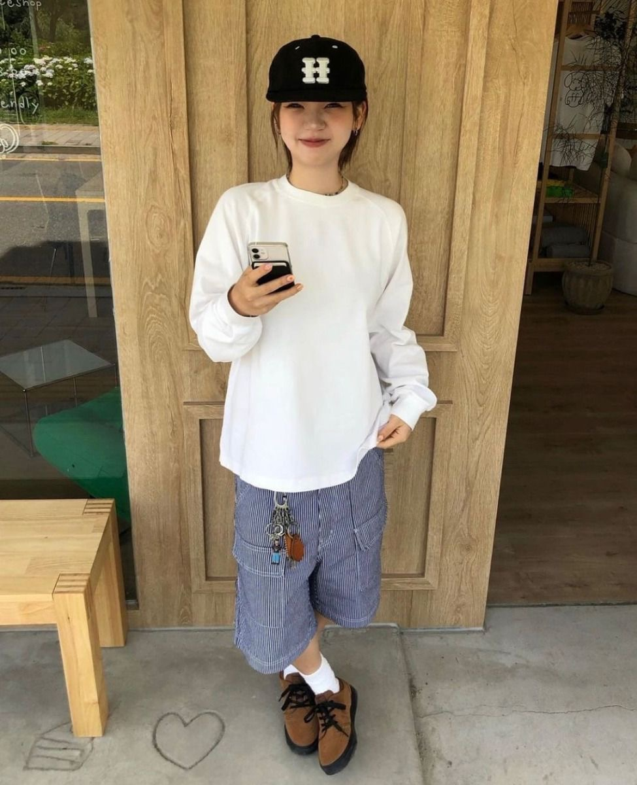
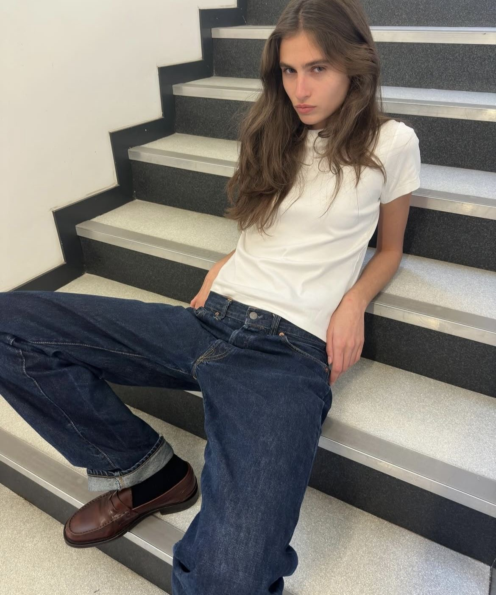

요새 저의 소소한 취미 중 하나는 핀터레스트와 인스타를 보며
제가 원하는 스타일의 옷을 입은 사람들을 찾아다니면서 스타일링에
참고할만한 아이템, 스타일링 등등을 서치하는 것입니다.
여러가지 스타일을 시도해보려고 하는데 제게 어울릴만한 스타일링을 찾아
여러가지 조합하며 멋쟁이처럼 입는 것이 저의 최종 목표입니다.
과하지 않게 그저 툭 걸쳐도 간지가 나는... 뭔지 아시죠? 그런 옷과 스타일을 찾고 있고 추구합니다.
아래의 사진은 제가 요새 좋아하는 스타일입니다.

